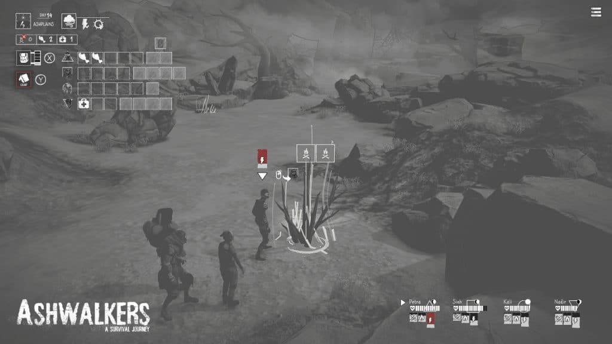
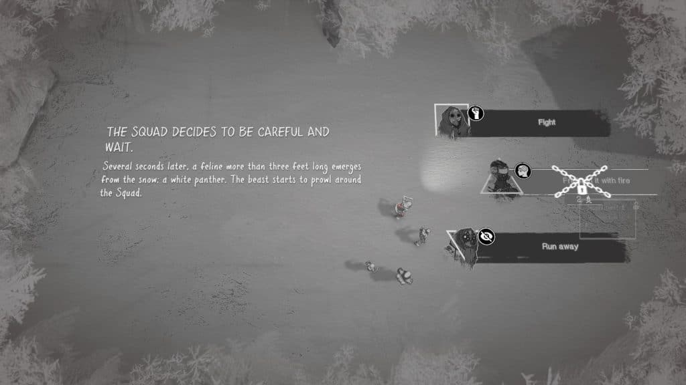
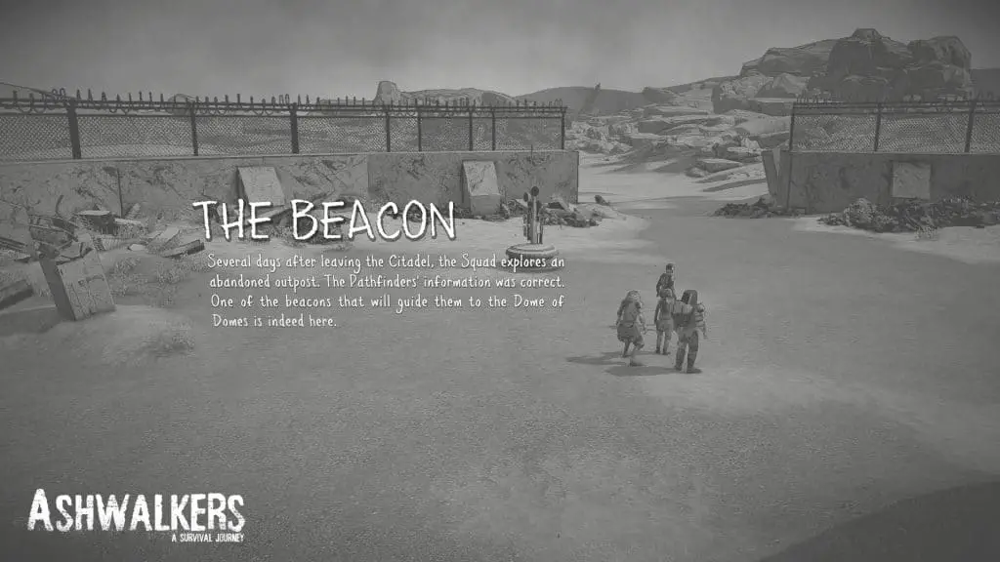
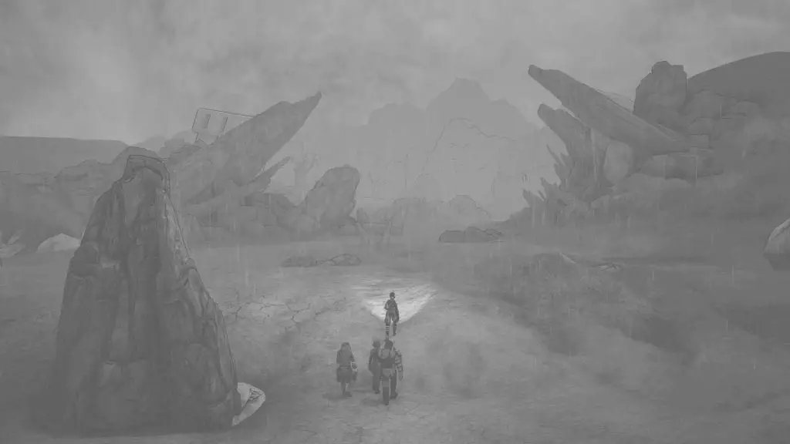

You often run into games that stake their whole structure and appeals on a singular mechanic, but sadly, those mechanics aren’t always fun. Developed by the studio founded by the co-creator of Life is Strange, Ashwalkers is an atmospheric narrative-driven adventure that is intriguing in its early moments but the game gets repetitive and dull, very quickly.
Given its name and setting, Ashwalkers made the decision to be entirely grayscale. At times this decision pays off as it sets the mood for a distinct post-apocalyptic atmosphere. On the other hand, it often makes the game look flat and dull, and at times it can make things hard to see – like there wasn’t enough contrast. The music is a few tracks of forgettable atmospheric pieces, working to set the mood, but nothing that will stick with you when you’re done.
Set in a post-apocalyptic world, where ash is ever-present and conditions are cruel, Ashwalkers is an atmospheric, narrative-driven point and click survival adventure but as a result, there isn’t much to the gameplay. Ashwalkers excels at providing the atmosphere and survival aspect, but fails at the others: it’s basically mandatory to enjoy world-building as that’s really the huge appeal of the style of game and story Ashwalkers is trying to tell. Players control a group of scouts sent from the citadel: the dome they call home is crumbling, and the residents of the dome must relocate to survive. It helps that the cast is likable, but for the most part, Ashwalkers is about exploration. Throughout the missions, players learn about how the disaster has shaped the world, and for a narrative-driven game, this borderlines on being generic and dull, but it’s serviceable enough.

A majority of gameplay revolves around survival mechanics and inventory management. As you walk through the harsh terrain, you need to manage health, hunger, warmth, energy, motivation with a limited amount of items. I found the inventory management was implemented in an engaging and compelling manner but if you’re not a fan of this feature, then you’ll probably check out pretty quickly.
Players will also need to make choices during gameplay. Each of the scouts on your team has a different outlook and perspective on events. Petra, the captain, has a strategic outlook; Sinh, a warrior, takes a combative approach; Kali, an optimistic researcher, takes the diplomatic approach; and Nadir, a veteran scout, errs on the side of caution and isolation. You’ll often run into decisions that have to be made with their perspectives that shape events throughout your adventure. There are also moments where these paths will diverge.

This mission aims to get to the dome of domes, but a lot happens along the way, and the narrative reflects that with branching paths that lead to 34 different endings. The whole gimmick of Ashwalkers are these endings: each run of Ashwalkers lasts about two hours, but to make up for that it has all of these different endings. There’s an inherent problem with this though: there’s only so many times you can go and play over the same story, go to the same places before you get tired of it.
Additional paths will often converge back into the same places, so there isn’t much difference when exploring new routes. While there are three major types of endings depending on what location you end up in, most of them are simple variations on each other. Many of the endings are a result of your last choice. From a player’s perspective, the only difference between these endings is a predictable slideshow ending highlighting the character archetype that makes the final choice.

Early playthroughs provide a decent variation between runs, but after a while, the differences were so minor that I eventually gave up attempting full runs. There’s no save loading, but you can do a custom run that’ll drop you at one of the locations. If I had to play through the whole two hours with the same experience only to get a slightly different PowerPoint presentation, in the end, I would have lost it.
A large part of the game is just walking, so in later runs, I would have appreciated having a fast-forward option so I can get to the decisions that will change things instead of just walking over the same places over and over again. I get that it would have diminished the atmospheric experience a bit, but playing through the same game over and over also affects these themes. The narrative can be anticlimactic as most of the lore is told through collectibles or brief interactions. Still, the atmosphere carries most of the weight and supports the situation the characters were in.

Ashwalkers provides a great first impression through its atmosphere and mechanics, but each playthrough weighs on that experience. The repetitive nature of this adventure simply has you playing until you wear yourself out after so many of the different endings are similar to each other. These 2-hour game loops had me wishing for longer paths or something else because there’s a good foundation here but it’s repetitive nature ultimately leaves the adventure unfulfilling.